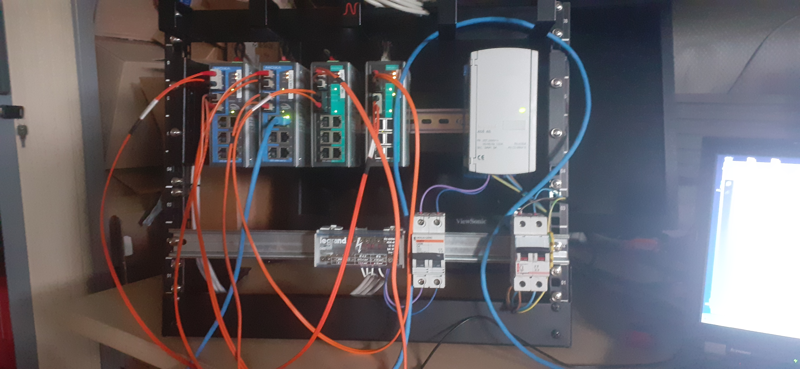
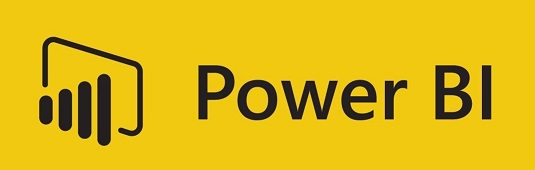
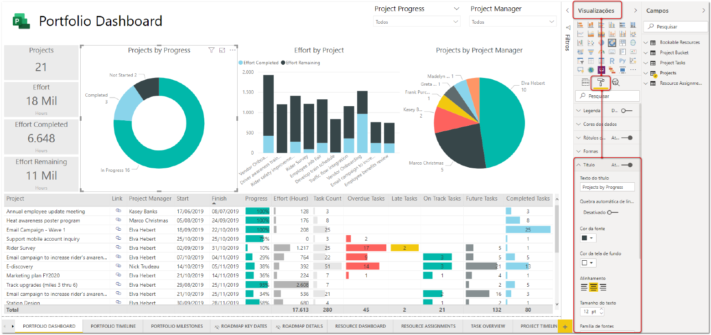

Présentation de SUEZ
SUEZ est une multinationale française spécialisée dans la gestion de l'eau et des déchets.
Elle propose des solutions innovantes pour préserver les ressources naturelles et relever les défis
environnementaux. Fondée en 1858, SUEZ est un acteur clé dans la gestion de l’eau potable, des déchets
valorisables et des services numériques intelligents.
Présente dans plus de 70 pays, l’entreprise sert des millions de clients à travers des solutions durables
comme le recyclage, la transformation des déchets en énergie, et les technologies numériques pour optimiser
la gestion des ressources.
Chiffres clés
Apprentissage des switches et de leur fonctionnement

Durant mon stage chez SUEZ, j'ai eu l'opportunité d'apprendre et de comprendre le fonctionnement des switches, ainsi que leur rôle crucial dans les réseaux informatiques. J'ai également acquis des compétences pratiques en gestion de réseaux, ce qui m'a permis d'améliorer mes connaissances techniques et d'optimiser les performances des infrastructures réseau.
Utilisation de Power BI


Power BI est un outil d'analyse de données et de visualisation qui permet aux entreprises de mieux comprendre leurs données et de prendre des décisions éclairées.
Chez SUEZ, j'ai utilisé Power BI pour créer des tableaux de bord et des rapports, ce qui a permis à l'entreprise d'avoir une meilleure vision sur leur environnement. Par exemple, j'ai travaillé sur des projets visant à analyser le nombre de voitures dans le monde et le nombre de PC, fournissant ainsi des insights précieux pour les stratégies de l'entreprise.
Mon expérience
Mon stage chez SUEZ a été une expérience extrêmement enrichissante. C'était ma première expérience en entreprise, et j'ai énormément apprécié chaque moment passé là-bas.
Apprendre l'informatique dans un milieu professionnel m'a permis de comprendre l'importance de chaque concept appris et de le mettre en pratique de manière concrète.
J'ai découvert un tout nouvel univers, non seulement sur l'informatique, mais aussi sur la vie en entreprise. C'était fascinant de voir comment une grande entreprise fonctionne au quotidien et comment chaque département contribue à la réussite collective.
Ce stage m'a permis de découvrir des aspects de la gestion des ressources, des réseaux et de l'innovation, tout en apprenant de nouvelles compétences techniques. Mais au-delà des aspects purement techniques, cette expérience m'a ouvert les yeux sur la réalité du travail en équipe, l'importance de la communication et de l'organisation dans un environnement professionnel.
J'ai pu évoluer dans un cadre stimulant et dynamique, et cette expérience reste l'une des plus enrichissantes de mon parcours.